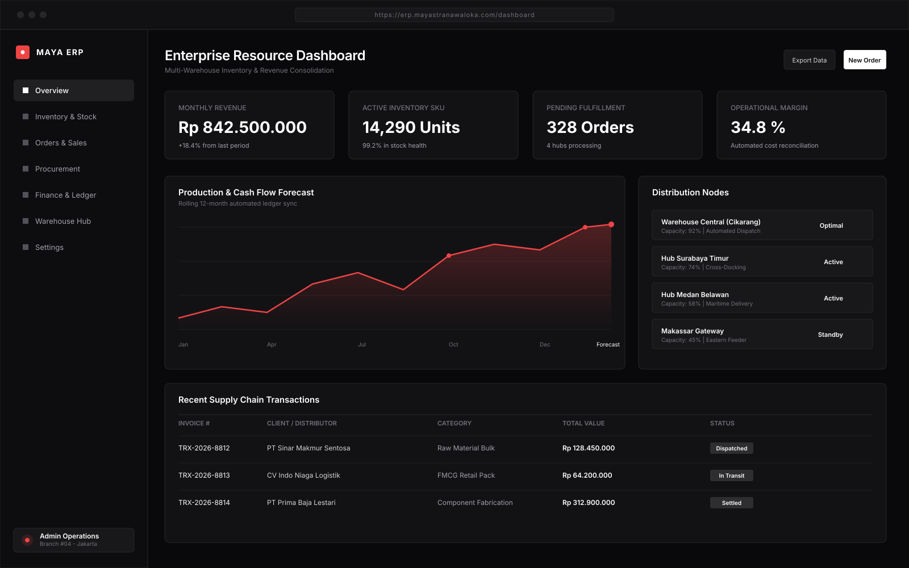
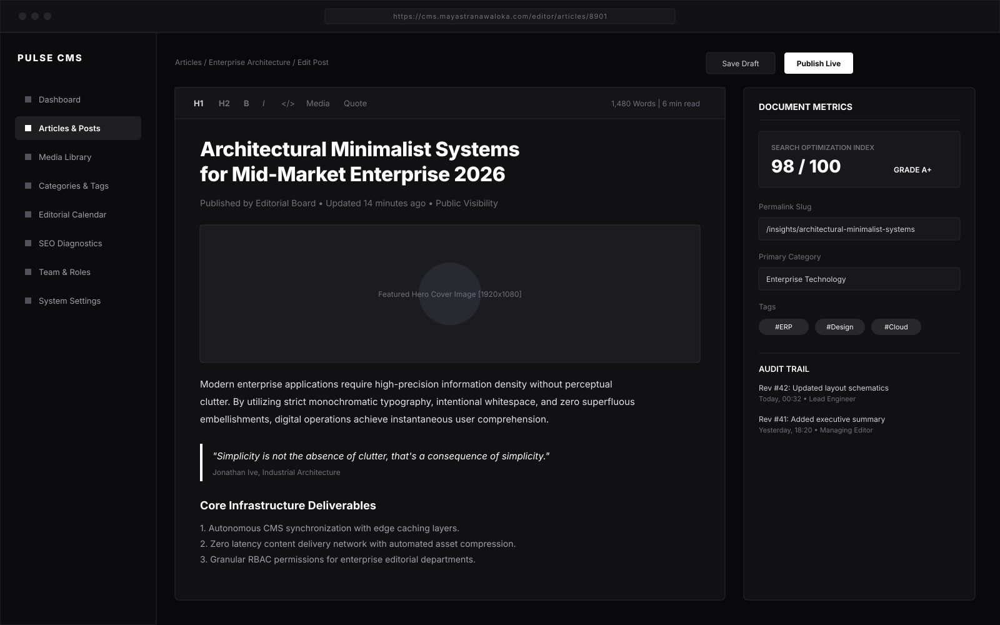
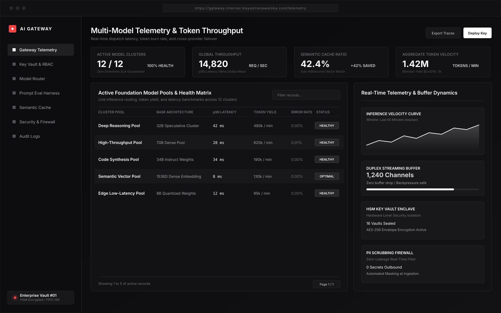
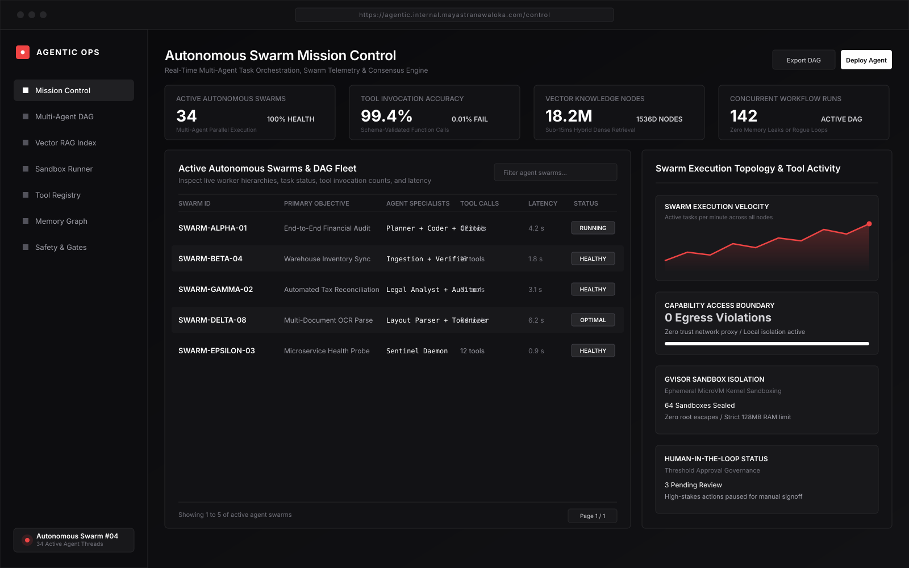

MAYASTRA NAWALOKA NUSANTARA
BANGKIT
MENANTANG
BATAS
SELECTED WORKS




PERSPECTIVES & CAPABILITIES
Kita buka-bukaan riset sistem komputer, arsitektur memory zero-copy, dan ledger konsensus terdistribusi, plus studi kasus mendalam tentang gimana tim Mayastra merancang commercial software yang clean, scalable, dan reliable.
10
Architectural Insights
Open Computer Science
10
How We Work
Commercial Development